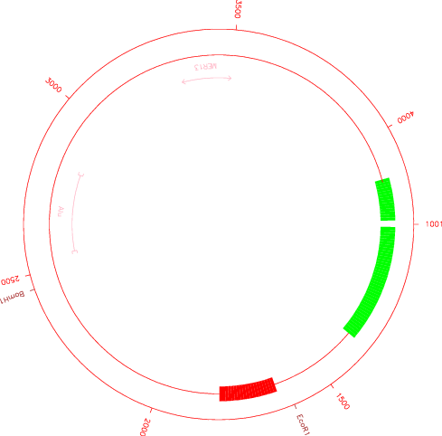

|
|
cirdna |
Please help by correcting and extending the Wiki pages.
cirdna draws circular maps of DNA constructs. It uses graphical shapes including ticks, ranges, and blocks to represent genetic markers (e.g, genes and ESTs) and places them according to their position in a DNA fragment. The markers can be organized in different groups. A group may contain up to 10000 markers, so the program is suitable for drawing circular representations of genomic sequences.
The program reads an input file containing the names and positions of the genetic markers. You must write this file yourself (see Input File Format below). Data for controlling the appearance of the markers may also be added to this file.
% cirdna -graph cps
Draws circular maps of DNA constructs
Commands to the lindna drawing program file [inputfile]: data.cirp
Draw a ruler [Y]:
Open : Open blocks
Filled : Filled blocks
Outline : Black border
Type of blocks [Filled]:
1 : In
2 : Out
Ticks inside or outside the circle [Out]:
1 : In
2 : Out
Text inside or outside the blocks [In]:
Created cirdna.ps
|
Go to the input files for this example
Go to the output files for this example
Standard (Mandatory) qualifiers:
[-infile] infile [inputfile] Commands to the lindna drawing
program file
-[no]ruler boolean [Y] Draw a ruler
-blocktype menu [Filled] Type of blocks (Values: Open (Open
blocks); Filled (Filled blocks); Outline
(Black border))
-posticks selection [Out] Ticks inside or outside the circle
-posblocks selection [In] Text inside or outside the blocks
-graphout graph [$EMBOSS_GRAPHICS value, or x11] Graph type
(ps, hpgl, hp7470, hp7580, meta, cps, x11,
tekt, tek, none, data, das, xterm, png, gif)
Additional (Optional) qualifiers:
-maxgroups integer [20] Maximum number of groups (Integer 1 or
more)
-maxlabels integer [10000] Maximum number of labels (Integer 1
or more)
-originangle float [90] Position in degrees of the molecule's
origin on the circle (Number from 0.000 to
360.000)
-[no]intersymbol boolean [Y] Horizontal junctions between blocks
-intercolour integer [1] Colour of junctions between blocks
(enter a colour number) (Integer from 0 to
15)
-interticks boolean [N] Horizontal junctions between ticks
-gapsize integer [500] Interval between ticks in the ruler
(Integer 0 or more)
-ticklines boolean [N] Vertical lines at the ruler's ticks
-textheight float [1.0] Height of text. Enter a number <1.0 or
>1.0 to decrease or increase the size,
respectively (Number 0.000 or more)
-textlength float [1.0] Length of text. Enter a number <1.0 or
>1.0 to decrease or increase the size,
respectively (Number 0.000 or more)
-tickheight float [1.0] Height of ticks. Enter a number <1.0
or >1.0 to decrease or increase the size,
respectively (Number 0.000 or more)
-blockheight float [1.0] Height of blocks. Enter a number <1.0
or >1.0 to decrease or increase the size,
respectively (Number 0.000 or more)
-rangeheight float [1.0] Height of range ends. Enter a number
<1.0 or >1.0 to decrease or increase the
size, respectively (Number 0.000 or more)
-gapgroup float [1.0] Space between groups. Enter a number
<1.0 or >1.0 to decrease or increase the
size, respectively (Number 0.000 or more)
-postext float [1.0] Space between text and ticks, blocks,
and ranges. Enter a number <1.0 or >1.0 to
decrease or increase the size, respectively
(Number 0.000 or more)
Advanced (Unprompted) qualifiers: (none)
Associated qualifiers:
"-graphout" associated qualifiers
-gprompt boolean Graph prompting
-gdesc string Graph description
-gtitle string Graph title
-gsubtitle string Graph subtitle
-gxtitle string Graph x axis title
-gytitle string Graph y axis title
-goutfile string Output file for non interactive displays
-gdirectory string Output directory
General qualifiers:
-auto boolean Turn off prompts
-stdout boolean Write first file to standard output
-filter boolean Read first file from standard input, write
first file to standard output
-options boolean Prompt for standard and additional values
-debug boolean Write debug output to program.dbg
-verbose boolean Report some/full command line options
-help boolean Report command line options. More
information on associated and general
qualifiers can be found with -help -verbose
-warning boolean Report warnings
-error boolean Report errors
-fatal boolean Report fatal errors
-die boolean Report dying program messages
|
| Standard (Mandatory) qualifiers | Allowed values | Default | |||||||
|---|---|---|---|---|---|---|---|---|---|
| [-infile] (Parameter 1) |
Commands to the lindna drawing program file | Input file | inputfile | ||||||
| -[no]ruler | Draw a ruler | Boolean value Yes/No | Yes | ||||||
| -blocktype | Type of blocks |
|
Filled | ||||||
| -posticks | Ticks inside or outside the circle | Choose from selection list of values | Out | ||||||
| -posblocks | Text inside or outside the blocks | Choose from selection list of values | In | ||||||
| -graphout | Graph type | EMBOSS has a list of known devices, including ps, hpgl, hp7470, hp7580, meta, cps, x11, tekt, tek, none, data, das, xterm, png, gif | EMBOSS_GRAPHICS value, or x11 | ||||||
| Additional (Optional) qualifiers | Allowed values | Default | |||||||
| -maxgroups | Maximum number of groups | Integer 1 or more | 20 | ||||||
| -maxlabels | Maximum number of labels | Integer 1 or more | 10000 | ||||||
| -originangle | Position in degrees of the molecule's origin on the circle | Number from 0.000 to 360.000 | 90 | ||||||
| -[no]intersymbol | Horizontal junctions between blocks | Boolean value Yes/No | Yes | ||||||
| -intercolour | Colour of junctions between blocks (enter a colour number) | Integer from 0 to 15 | 1 | ||||||
| -interticks | Horizontal junctions between ticks | Boolean value Yes/No | No | ||||||
| -gapsize | Interval between ticks in the ruler | Integer 0 or more | 500 | ||||||
| -ticklines | Vertical lines at the ruler's ticks | Boolean value Yes/No | No | ||||||
| -textheight | Height of text. Enter a number <1.0 or >1.0 to decrease or increase the size, respectively | Number 0.000 or more | 1.0 | ||||||
| -textlength | Length of text. Enter a number <1.0 or >1.0 to decrease or increase the size, respectively | Number 0.000 or more | 1.0 | ||||||
| -tickheight | Height of ticks. Enter a number <1.0 or >1.0 to decrease or increase the size, respectively | Number 0.000 or more | 1.0 | ||||||
| -blockheight | Height of blocks. Enter a number <1.0 or >1.0 to decrease or increase the size, respectively | Number 0.000 or more | 1.0 | ||||||
| -rangeheight | Height of range ends. Enter a number <1.0 or >1.0 to decrease or increase the size, respectively | Number 0.000 or more | 1.0 | ||||||
| -gapgroup | Space between groups. Enter a number <1.0 or >1.0 to decrease or increase the size, respectively | Number 0.000 or more | 1.0 | ||||||
| -postext | Space between text and ticks, blocks, and ranges. Enter a number <1.0 or >1.0 to decrease or increase the size, respectively | Number 0.000 or more | 1.0 | ||||||
| Advanced (Unprompted) qualifiers | Allowed values | Default | |||||||
| (none) | |||||||||
Blank lines in the input file are ignored.
The file is organized in several fields separated by one or more space or TAB characters.
The first non-blank line gives the start position of the DNA fragment to be drawn after the keyword 'Start'. The end position is on the second line following the keyword 'End'.
Then, one or more groups (up to a maximum of 20) of genetic markers are defined. Each group begins with a line consisting of the keyword 'group' and ends with a line consisting of the keyword 'endgroup'.
If desired, a group name can be given on the very next line but will not be displayed (only for compatibilty with lindna).
Next, the individual markers (up to a maximum of 1000) of the group are described. Each marker begins with a line consisting of the keyword 'label' and ends with a line consisting of the keyword 'endlabel'.
Do not start a new marker (by using a 'label' line) before you have closed the previous marker (by using an 'endlabel' line). You must end a previous marker specification before starting a new one. i.e. do not overlap marker specifications in the input file.
For each marker, the line following the 'label' line describes the marker. Three types of markers can be drawn: ticks, blocks, and ranges.
For a tick, the descriptive line begins with the keyword 'Tick', followed by the position of the tick in the DNA fragment, and a number from 0 to 15 specifying the color in which the tick will be drawn (a list of available colors is given below). If desired, a name can be written above the tick. This name must be given on the next line. If more than one name are given (one name per line), only the first one will be displayed.
For a block, the descriptive line begins with the keyword 'Block', followed by the start and end positions of the block in the DNA fragment, and the number of the block's color. If desired, a name can be written above or inside the block. This name must be given on the next line. If more than one name are given (one name per line), only the first one will be displayed.
For a range, the descriptive line begins with the keyword 'Range', followed by the start and end positions of the range in the DNA fragment. Next on the line are the types of boundaries that are to be drawn. The user can choose among '>', '<', '[', ']' and '|' for both start and end boundaries. If none of these types is wanted for a given boundary, then a point '.' must be entered. Next is the color number. If desired, a name can be written above the range. This name must be given on the next line. If more than one name are given (one name per line), only the first one will be displayed.
For any type of markers, names will be written in the same color as the marker. Also, try to avoid long names.
The colors defined in the PLPLOT graphics library are:
0 "BLACK", 1 "RED", 2 "YELLOW", 3 "GREEN", 4 "AQUAMARINE", 5 "PINK", 6 "WHEAT", 7 "GREY", 8 "BROWN", 9 "BLUE", 10 "BLUEVIOLET", 11 "CYAN", 12 "TURQUOISE", 13 "MAGENTA", 14 "SALMON", and 15 "WHITE".
This format can also be used for the program "lindna".
Start 1001 End 4270 group label Block 1011 1362 3 ex1 endlabel label Tick 1610 8 EcoR1 endlabel label Block 1647 1815 1 endlabel label Tick 2459 8 BamH1 endlabel label Block 4139 4258 3 ex2 endlabel endgroup group label Range 2541 2812 [ ] 5 Alu endlabel label Range 3322 3497 > < 5 MER13 endlabel endgroup |
 Output is to the specified graphics device.
There are many options for controlling the appearance of the plot. Mostly these are "additional qualifiers" and can be specified on the command-line by using the corresponding flag, but will not normally be prompted for. To be prompted for values for them, run the program with the -options global qualifier.
| Program name | Description |
|---|---|
| abiview | Display the trace in an ABI sequencer file |
| lindna | Draws linear maps of DNA constructs |
| pepnet | Draw a helical net for a protein sequence |
| pepwheel | Draw a helical wheel diagram for a protein sequence |
| prettyplot | Draw a sequence alignment with pretty formatting |
| prettyseq | Write a nucleotide sequence and its translation to file |
| remap | Display restriction enzyme binding sites in a nucleotide sequence |
| seealso | Finds programs with similar function to a specified program |
| showalign | Display a multiple sequence alignment in pretty format |
| showdb | Displays information on configured databases |
| showfeat | Display features of a sequence in pretty format |
| showpep | Displays protein sequences with features in pretty format |
| showseq | Displays sequences with features in pretty format |
| sixpack | Display a DNA sequence with 6-frame translation and ORFs |
| textsearch | Search the textual description of sequence(s) |